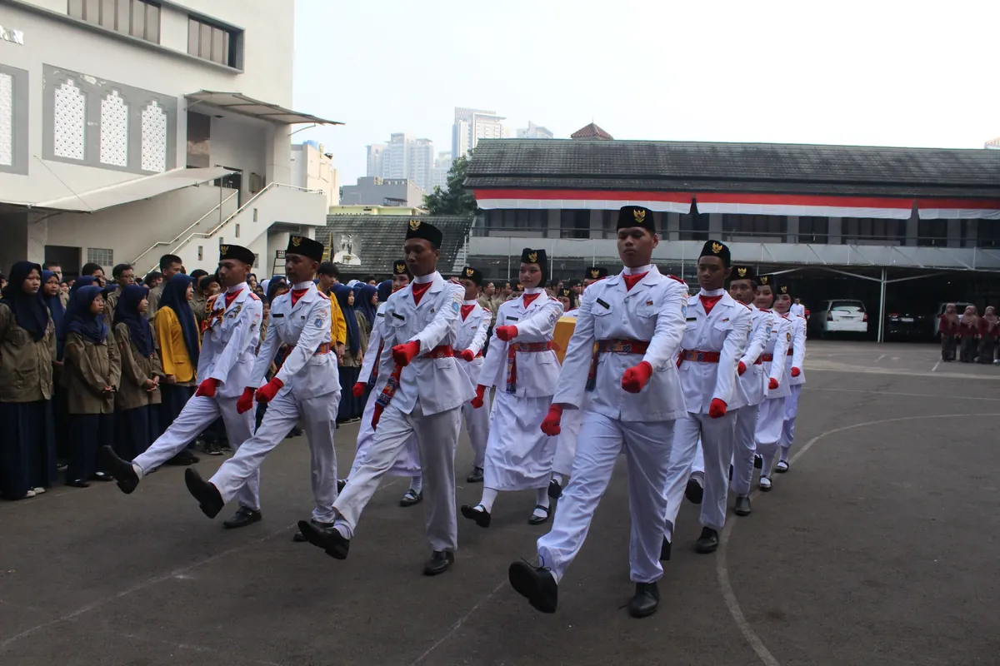

Kreativitas Sinematik,
Karya Nyata
Multimedia.
Wadah resmi eksplorasi videografi sinematik, siaran langsung multi-kamera, motion graphics, dan manajemen absensi internal tim SMK Muhammadiyah 4 Jakarta
Eksplorasi Divisi
Film & Sinematografi
Eksplorasi pembuatan film pendek, dokumenter, video komersial, hingga tata cahaya panggung profesional dengan standar sinematik tinggi.
Multi-Cam & Streaming
Manajemen sistem siaran langsung acara sekolah, webinar, dan event besar menggunakan hardware switcher dan OBS Studio.
Fotografi
Mengabadikan momen, ekspresi, dan narasi visual di setiap sudut acara sekolah maupun proyek kreatif menggunakan teknik pencahayaan dan komposisi profesional.
Sistem Absensi & Database Tim
Platform terintegrasi berbasis cloud untuk memantau tingkat kehadiran, rekapitulasi kegiatan harian, dan evaluasi kedisiplinan anggota secara real-time.
Showreel Showcase
Kompilasi cuplikan karya video sinematik dan dokumentasi event terbaik.
Showreel Produksi & Siaran Langsung 2026
Menampilkan kompilasi karya terbaik dari divisi sinematografi, liputan event resmi sekolah, hingga penataan panggung multi-kamera.
Film satu langkah
Di tengah kesibukan kota dan lalu lalang orang-orang yang tampak memiliki arah tujuan jelas, seorang pemuda merasa kebingungan dan ragu akan masa depannya setelah lulus nanti[cite: 25].
Galeri Proyek Pilihan

Foto Paskibraka SMKM4
Eksplorasi penataan cahaya dramatis dan pengambilan gambar menggunakan rig kamera 4K.
Setup Siaran Langsung Wisuda
Konfigurasi multi-kamera switch dan audio mixing lapangan secara seamless.
Animasi Motion Graphics Identitas
Perancangan bumper video dan lower thirds interaktif untuk tayangan siaran.
Dokumenter Profil Sekolah
Perekaman aktivitas pembelajaran berbasis kejuruan dengan narasi visual mendalam.
Produksi Talkshow Podcast Studio
Manajemen tata suara multi-mic dan integrasi switcher video berbasis NDI.
Perangkat & Software Suite
Standar peralatan keras dan perangkat lunak profesional yang digunakan dalam setiap produksi.
HARDWARE & PERIPHERALS
- Kamera DSLR Dilengkapi lensa dan filter.
- Hardware Video Switcher & Capture Card Untuk kestabilan data siaran langsung multi-kamera tanpa delay.
- Audio Mixer & Wireless Lavalier Mic Menjamin kejernihan rekaman suara di dalam maupun luar ruangan.
SOFTWARE & ECOSYSTEM
- Capcut & Lightroom Pusat pengeditan video, efek visual, dan grading warna profesional.
- OBS Studio & vMix Aplikasi penyiaran utama untuk live streaming multi-input.
- Canva Digunakan untuk produksi konten cepat dan desain aset grafis harian.
Akses Sistem Kehadiran & Anggota
Masuk ke dashboard sistem absensi terintegrasi untuk melihat rekapitulasi kehadiran dan mengelola data kegiatan divisi.